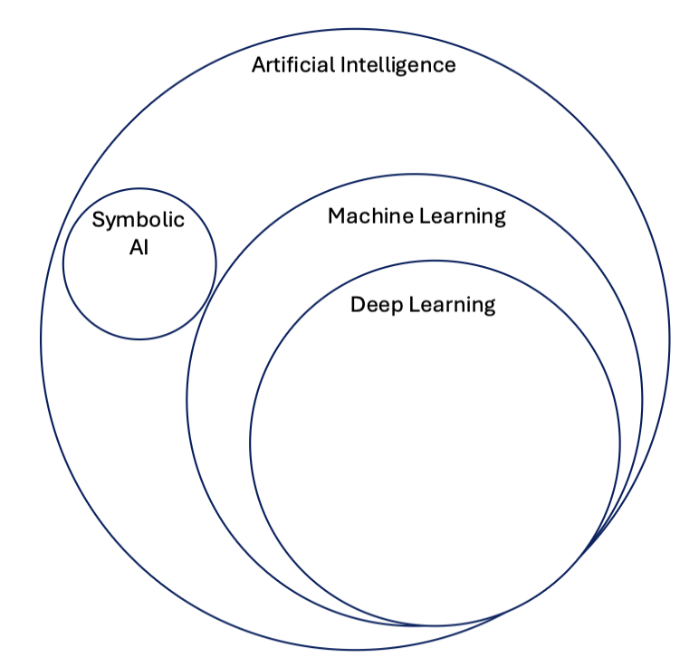

Concepts in Artificial Intelligence
The goal of this page is to define and explain common terms associated within the field of artificial intelligence (AI) and more specifically machine learning (ML). As Figure 1, below, shows AI is a broad field which contains multiple sub-fields such as machine learning.

Artificial Intelligence (AI)
The concept of artificial intelligence or "AI" was developed around the 1950s and can be concisely defined as the effort to automate intellectual tasks normally performed by humans.[1] AI is the general field that encompasses machine learning and deep learning. However, AI is not limited to learning methods, but extends to hardcoded rules as well, this approach is known as symbolic AI and was the dominant paradigm from 1950s until about the 1980s.[1]
Machine Learning (ML)
Machine learning, a branch of AI, arises from a general set of questions such as "could a computer go beyond what we order it to perform and learn on its own to perform?" Essentially, instead of inputting rules and data to generate an answer, ML achieves to take in as an input data and answers to generate rules, which can in turn be applied to new data.[1] Thus, a ML system is trained instead if programmed. ML began to flourish in the 1990s, but really took off as the main field within AI as larger dataset and faster hardware became available.
Deep Learning (DL)
DL is a sub-field within ML, which learns data representations by emphasising learning about that data over successive layers of increasingly meaningful representations.[1]
MLOps
Machine learning operations refers to a set of practices that help in the development, refrainment, and deployment of ML models. Machine learning generally begins with data curation and preparation whereby data may originate at multiple, varying sources within an organization or from a customer. Data is reviewed, aggregated, cleaned and feature engineered. An exploratory phase may be involved, which requires experimentation with various model architectures and types, leading to multiple model versions, data versions, and experiment tracking recording the specific of the hyperparameter details along with the specific data and model characteristics. After experimentation, models are refined and optimized in order to address a set of business or research problems. MLOps implementations help to systemically and simultaneously manage the development and release of the ML models as code and data changes. An optimal MLOps system treats ML assets (data, experiments, code) similar to other continuous integration and deliver environments. The deployment of models ought to be standardized with the ability to run alongside the applications and services that are normally consumed in release process.
References
[1] Chollet, Francois. Deep Learning with Python (2018).
This documentation is part of the Teradyne Archimedes Reference Architecture series.